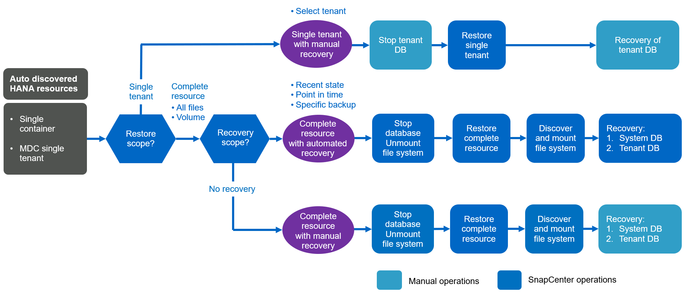

Mejores prácticas
Mejores prácticas
Conceptos y prácticas recomendadas de SnapCenter
 Sugerir cambios
Sugerir cambios
En esta sección se describen los conceptos y las prácticas recomendadas de SnapCenter relacionadas con la configuración y la implementación de recursos SAP HANA.
Opciones y conceptos de configuración de recursos SAP HANA
Con SnapCenter, la configuración de recursos de base de datos SAP HANA puede realizarse con dos enfoques diferentes.
-
Configuración manual de recursos. la información de recursos y espacio de almacenamiento de HANA se debe proporcionar manualmente.
-
Descubrimiento automático de recursos HANA. el descubrimiento automático simplifica la configuración de bases de datos HANA en SnapCenter y permite la restauración y recuperación automatizadas.
Es importante entender que solo se habilitan los recursos de bases de datos de HANA en SnapCenter que se detectan automáticamente para realizar restauraciones y recuperaciones automatizadas. Los recursos DE la base de datos DE HANA que se configuran manualmente en SnapCenter deben recuperarse manualmente después de una operación de restauración en SnapCenter.
Por otro lado, la detección automática con SnapCenter no es compatible con todas las arquitecturas de HANA y las configuraciones de infraestructura. Por lo tanto, los entornos HANA pueden requerir un enfoque mixto en el cual algunos sistemas HANA (sistemas de varios hosts HANA) requieren una configuración de recursos manual y todos los demás pueden configurarse mediante detección automática.
La detección automática y las restauraciones y recuperaciones automatizadas dependen de la capacidad para ejecutar comandos del sistema operativo en el host de la base de datos. Algunos ejemplos son la detección de huella de almacenamiento y sistema de archivos, y las operaciones de desmontaje, montaje o detección de LUN. Estas operaciones se ejecutan en el plugin de SnapCenter Linux, que se implementa automáticamente junto con el plugin de HANA. Por lo tanto, es necesario implementar el complemento HANA en el host de la base de datos para permitir la detección automática, así como la restauración y recuperación automatizadas. También es posible deshabilitar la detección automática después de la implementación del plugin de HANA en el host de la base de datos. En este caso, el recurso será un recurso configurado manualmente.
La siguiente figura resume las dependencias. Encontrará más información sobre las opciones de puesta en marcha de HANA en la sección “Opciones de puesta en marcha para el complemento SAP HANA”.


|
Los complementos HANA y Linux actualmente, solo están disponibles para sistemas basados en Intel. Si las bases de datos de HANA se ejecutan en IBM Power Systems, se debe utilizar un host de plugin HANA central. |
Arquitecturas de HANA compatibles para detección automática y recuperación automatizada
Con SnapCenter, la detección automática, y la restauración y recuperación automatizadas son compatibles con la mayoría de las configuraciones de HANA, con la excepción de que varios sistemas de host de HANA requieren una configuración manual.
La siguiente tabla muestra las configuraciones de HANA compatibles para la detección automática.
| Plugin DE HANA instalado en: | Arquitectura DE HANA | Configuración del sistema HANA | De almacenamiento |
|---|---|---|---|
Host de base de datos HANA |
Host único |
|
|
|
|
Los sistemas MDC DE HANA con varios inquilinos son compatibles para la detección automática, pero no para la restauración y la recuperación automatizadas con la versión de SnapCenter actual. |
Arquitecturas HANA compatibles para la configuración manual de recursos de HANA
Es posible configurar manualmente los recursos HANA para todas las arquitecturas HANA; sin embargo, requiere un host de complemento HANA central. El host del plugin central puede ser el propio servidor SnapCenter o un host Linux o Windows independiente.
|
|
Cuando el plugin de HANA se implementa en el host de la base de datos HANA, de forma predeterminada, el recurso se detecta automáticamente. Es posible deshabilitar la detección automática para hosts individuales, de modo que el plugin pueda ponerse en marcha; por ejemplo, en un host de base de datos con la replicación del sistema HANA activada y una versión de SnapCenter < 4.6, donde no se admite la detección automática. Para obtener más información, consulte la sección "“Deshabilitar la detección automática en el host del plugin de HANA.”" |
La siguiente tabla muestra las configuraciones de HANA compatibles para la configuración manual de recursos de HANA.
| Plugin DE HANA instalado en: | Arquitectura DE HANA | Configuración del sistema HANA | De almacenamiento |
|---|---|---|---|
Host de plugin central (servidor SnapCenter o host Linux independiente) |
Host único o múltiple |
|
|
Opciones de implementación para el complemento SAP HANA
En la siguiente figura, se muestra la vista lógica y la comunicación entre SnapCenter Server y las bases de datos SAP HANA.
El servidor SnapCenter se comunica mediante el plugin de SAP HANA con las bases de datos SAP HANA. El complemento SAP HANA utiliza el software cliente hdbsql de SAP HANA para ejecutar comandos SQL en las bases de datos SAP HANA. El hdbuserstore de SAP HANA se utiliza para proporcionar las credenciales de usuario, el nombre de host y la información del puerto para acceder a las bases de datos SAP HANA.

|
|
El complemento SAP HANA y el software cliente SAP hdbsql, que incluye la herramienta de configuración hdbuserstore, deben instalarse conjuntamente en el mismo host. |
El host puede ser el servidor de SnapCenter mismo, un host del plugin central independiente o los hosts individuales de bases de datos SAP HANA.
SnapCenter Server de alta disponibilidad
SnapCenter se puede establecer en una configuración de alta disponibilidad de dos nodos. En dicha configuración, se utiliza un equilibrador de carga (por ejemplo, F5) en un modo activo/pasivo utilizando una dirección IP virtual dirigida al host de SnapCenter activo. El repositorio de SnapCenter (la base de datos de MySQL) es replicado por SnapCenter entre los dos hosts para que los datos de SnapCenter estén siempre sincronizados.
La alta disponibilidad del servidor SnapCenter no es compatible si el plugin HANA está instalado en el servidor SnapCenter. Si planea configurar SnapCenter en una configuración de alta disponibilidad, no instale el plugin HANA en el servidor SnapCenter. Puede encontrar más información sobre la alta disponibilidad de SnapCenter en este "Página de la base de conocimientos de NetApp".
SnapCenter Server como host de plugin de HANA central
La siguiente figura muestra una configuración en la que SnapCenter Server se utiliza como host de plugin central. El complemento SAP HANA y el software de cliente SAP hdbsql se instalan en el servidor SnapCenter.

Dado que el complemento HANA se puede comunicar con las bases de datos HANA gestionadas usando el hdbclient a través de la red, no es necesario instalar ningún componente de SnapCenter en los hosts individuales de la base de datos HANA. SnapCenter puede proteger las bases de datos de HANA mediante un host del complemento de HANA central en el que todas las claves de userstore están configuradas para las bases de datos gestionadas.
Por otro lado, la automatización mejorada del flujo de trabajo para la detección automática, la automatización de la restauración y la recuperación, así como las operaciones de actualización del sistema SAP requieren la instalación de los componentes de SnapCenter en el host de la base de datos. Cuando se utiliza un host de un plugin de HANA central, estas funciones no están disponibles.
Además, la alta disponibilidad del servidor SnapCenter con la función de alta disponibilidad integrada no se puede usar cuando el complemento HANA está instalado en el servidor SnapCenter. La alta disponibilidad se puede obtener usando VMware ha si el servidor SnapCenter se está ejecutando en un equipo virtual dentro de un clúster de VMware.
Un host separado como host de plugin de HANA central
En la siguiente figura, se muestra una configuración en la que un host Linux separado se usa como host de plugin central. En este caso, el complemento SAP HANA y el software de cliente SAP hdbsql se instalan en el host Linux.
|
|
El host separado del plugin central también puede ser un host de Windows. |

La misma restricción en cuanto a la disponibilidad de funciones descrita en la sección anterior también se aplica a un host de plugin central independiente.
Sin embargo, con esta opción de puesta en marcha, el servidor SnapCenter se puede configurar con la funcionalidad de alta disponibilidad incorporada. El host del plugin central también debe ser ha, por ejemplo, mediante una solución de clúster Linux.
Plugin DE HANA implementado en hosts de base de datos de HANA individuales
La siguiente figura muestra una configuración en la cual el plugin de SAP HANA está instalado en cada host de base de datos SAP HANA.

Cuando el complemento HANA se instala en cada host de base de datos HANA individual, todas las funciones, como la detección automática y la restauración y recuperación automatizadas, están disponibles. Además, el servidor SnapCenter puede configurarse en una configuración de alta disponibilidad.
Puesta en marcha mixta del complemento de HANA
Como se explicó al principio de esta sección, algunas configuraciones del sistema HANA, como varios sistemas de host, requieren un host de plugin centralizado. Por lo tanto, la mayoría de las configuraciones de SnapCenter requieren una puesta en marcha mixta del complemento HANA.
NetApp recomienda implementar el plugin de HANA en el host de base de datos de HANA para todas las configuraciones del sistema HANA que se admiten para la detección automática. Otros sistemas HANA, como las configuraciones de varios hosts, deben gestionarse con el host de plugin de HANA central.
Las dos figuras siguientes muestran implementaciones de plugins combinadas con el servidor SnapCenter o con un host Linux independiente como host de plugins centrales. La única diferencia entre estas dos puestas en marcha es la configuración de alta disponibilidad opcional.


Resumen y recomendaciones
En general, NetApp recomienda poner en marcha el complemento HANA en cada host SAP HANA para habilitar todas las funciones disponibles de SnapCenter HANA y mejorar la automatización del flujo de trabajo.
|
|
Los complementos HANA y Linux actualmente solo están disponibles para sistemas basados en Intel. Si las bases de datos de HANA se ejecutan en IBM Power Systems, se debe utilizar un host de plugin HANA central. |
Para las configuraciones de HANA en las que no se admite la detección automática, como las configuraciones de varios hosts de HANA, se debe configurar un host del plugin de HANA central adicional. El host del complemento central puede ser el servidor de SnapCenter si se puede utilizar ha de VMware para alta disponibilidad de SnapCenter. Si piensa utilizar la funcionalidad de alta disponibilidad incorporada de SnapCenter, utilice un host de plugin de Linux independiente.
En la tabla siguiente se resumen las distintas opciones de implementación.
| Opción de implementación | Dependencias |
|---|---|
Plugin de host de plugin de HANA central instalado en el servidor SnapCenter |
Pros: * Configuración central de almacenamiento de usuario de HDB de complemento único HANA * no se requieren componentes de software SnapCenter en los hosts individuales de bases de datos de HANA * compatibilidad con todas las arquitecturas de HANA: * Configuración manual de recursos * recuperación manual * no se ejecuta soporte para la restauración de un solo inquilino * los pasos previos y posteriores a un script en el host del plugin central * alta disponibilidad de SnapCenter integrada no compatible * la combinación de SID y nombre de inquilino debe ser única en todas las bases de datos HANA gestionadas * Log La gestión de retención de backup está habilitada/deshabilitada para todas las bases de datos HANA gestionadas |
Plugin de host de plugin de HANA central instalado en un servidor Linux o Windows independiente |
Pros: * Configuración central de almacenamiento de usuario de HDB de complemento único HANA * no se requieren componentes de software SnapCenter en hosts individuales de bases de datos HANA * compatibilidad con todas las arquitecturas HANA * SnapCenter integrada de alta disponibilidad compatible con funciones: * Configuración manual de recursos * recuperación manual * no se ejecuta soporte para la restauración de un solo inquilino * cualquier paso previo y posterior al script en el host del plugin central * la combinación de SID y nombre de inquilino debe ser única en todas las bases de datos HANA gestionadas * la gestión de retención de backup de registro habilitada/deshabilitada para todas las bases de datos gestionadas Bases de datos HANA |
Plugin de host de plugin de HANA individual instalado en el servidor de bases de datos HANA |
Ventajas: * Detección automática de recursos de HANA * restauración y recuperación automatizadas * restauración de un solo inquilino * automatización previa y posterior al script para la actualización del sistema SAP * compatible con alta disponibilidad de SnapCenter integrada * la gestión de la retención de backup de registro se puede habilitar o deshabilitar para cada ubicación de base de datos de HANA individual: * No es compatible con todas las arquitecturas HANA. Se requiere un host de plugin central adicional para varios sistemas host HANA. * El plugin de HANA debe ponerse en marcha en cada host de base de datos HANA |
Estrategia de protección de datos
Antes de configurar SnapCenter y el complemento SAP HANA, la estrategia de protección de datos se debe definir de acuerdo con los requisitos de objetivo de tiempo de recuperación y objetivo de punto de recuperación de los distintos sistemas SAP.
Un enfoque común es definir tipos de sistemas como sistemas de producción, desarrollo, pruebas o entornos de pruebas. Normalmente, todos los sistemas SAP del mismo tipo tienen los mismos parámetros de protección de datos.
Los parámetros que deben definirse son:
-
¿Con qué frecuencia se debería ejecutar un backup de Snapshot?
-
¿Cuánto tiempo se deberían conservar los backups de copias snapshot en el sistema de almacenamiento principal?
-
¿Con qué frecuencia se debe ejecutar una comprobación de integridad de bloque?
-
¿Deberían replicarse los principales backups en una ubicación de backup externa?
-
¿Cuánto tiempo deberían guardarse los backups en el almacenamiento de backups externo?
En la siguiente tabla se muestra un ejemplo de parámetros de protección de datos para la producción, desarrollo y prueba del tipo de sistema. Para el sistema de producción se ha definido una alta frecuencia de backups, y los backups se replican en un centro de backup externo una vez al día. Los sistemas de prueba tienen menos requisitos y no tienen replicación de backups.
| Parámetros | Sistemas de producción | Sistemas de desarrollo | Pruebas de sistemas |
|---|---|---|---|
Frecuencia de backup |
Cada 4 horas |
Cada 4 horas |
Cada 4 horas |
Retención primaria |
2 días |
2 días |
2 días |
Comprobación de integridad de bloques |
Una vez a la semana |
Una vez a la semana |
No |
Replicación en centro de backup externo |
Una vez al día |
Una vez al día |
No |
Retención de backups fuera de las instalaciones |
2 semanas |
2 semanas |
No aplicable |
En la siguiente tabla, se muestran las políticas que deben configurarse para los parámetros de protección de datos.
| Parámetros | PolicyLocalSnap | PolicyLocalSnapAndSnapVault | PolicyBlockIntegrityCheck |
|---|---|---|---|
Tipo de backup |
Basado en Snapshot |
Basado en Snapshot |
Basado en archivos |
Frecuencia de programación |
Cada hora |
Todos los días |
Semanal |
Retención primaria |
Recuento = 12 |
Recuento = 3 |
Recuento = 1 |
Replicación SnapVault |
No |
Sí |
No aplicable |
La política LocalSnapshot Se usa para los sistemas de producción, desarrollo y prueba para cubrir los backups locales de Snapshot con una retención de dos días.
En la configuración de protección de recursos, la programación se define de forma diferente para los tipos de sistema:
-
Producción. Horario cada 4 horas.
-
Desarrollo. Horario cada 4 horas.
-
Prueba. Horario cada 4 horas.
La política LocalSnapAndSnapVault se utiliza en los sistemas de producción y desarrollo para cubrir la replicación diaria al almacenamiento de backup externo.
En la configuración de protección de recursos, la programación se define para producción y desarrollo:
-
Producción. programar todos los días.
-
Desarrollo. Horario todos los días.
La política BlockIntegrityCheck se utiliza en los sistemas de producción y desarrollo para cubrir la comprobación de integridad de bloques semanales mediante un backup basado en archivos.
En la configuración de protección de recursos, la programación se define para producción y desarrollo:
-
* Producción.* Horario cada semana.
-
Desarrollo. Horario cada semana.
Para cada base de datos SAP HANA individual que utilice la política de backup externa, se debe configurar una relación de protección en la capa de almacenamiento. La relación de protección define qué volúmenes se replican y la retención de los backups en el almacenamiento de backup externo.
Con nuestro ejemplo, para cada sistema de producción y desarrollo, se define una retención de dos semanas en el almacenamiento de backup externo.
|
|
En nuestro ejemplo, las políticas de protección y la retención para los recursos de la base de datos SAP HANA y los recursos de volúmenes sin datos no son diferentes. |
Operaciones de backup
SAP introdujo la compatibilidad de los backups de Snapshot para sistemas de varios inquilinos MDC con HANA 2.0 SPS4. SnapCenter admite operaciones de backup de Snapshot de sistemas MDC de HANA con varios inquilinos. SnapCenter también admite dos operaciones de restauración diferentes de un sistema MDC de HANA. Puede restaurar todo el sistema, la base de datos del sistema y todos los clientes, o bien restaurar un solo usuario. Existen algunos requisitos previos para permitir a SnapCenter ejecutar estas operaciones.
En un sistema MDC, la configuración de tenant no es necesariamente estática. Es posible agregar inquilinos o eliminar inquilinos. SnapCenter no puede confiar en la configuración que se detecta cuando la base de datos HANA se añade a SnapCenter. SnapCenter debe saber qué inquilinos están disponibles en el momento específico en que se ejecuta la operación de backup.
Para habilitar una operación de restauración de un solo usuario, SnapCenter debe saber qué inquilinos se incluyen en cada backup de Snapshot. Además, debe saber qué archivos y directorios pertenecen a cada inquilino incluido en el backup de Snapshot.
Por lo tanto, con cada operación de backup, el primer paso del flujo de trabajo es obtener la información del inquilino. Esto incluye los nombres de arrendatario y la información de archivo y directorio correspondiente. Estos datos deben almacenarse en los metadatos de backups de Snapshot para poder admitir una única operación de restauración de usuarios. El siguiente paso es la operación de backup de Snapshot. Este paso incluye el comando SQL para activar el punto de guardado de backup de HANA, el backup de snapshot de almacenamiento y el comando SQL para cerrar la operación de Snapshot. Al usar el comando close, la base de datos de HANA actualiza el catálogo de backup de la base de datos del sistema y cada inquilino.
|
|
SAP no admite las operaciones de backup de Snapshot para sistemas MDC cuando se detienen uno o varios inquilinos. |
Para la gestión de retención de los backups de datos y la gestión del catálogo de backup de HANA, SnapCenter debe ejecutar las operaciones de eliminación de catálogo para la base de datos del sistema y todas las bases de datos de tenant que se identificaron en el primer paso. Del mismo modo para los backups de registros, el flujo de trabajo SnapCenter debe funcionar en cada inquilino que forme parte de la operación de backup.
En la siguiente figura, se muestra información general sobre el flujo de trabajo de backup.

Flujo de trabajo de backup para backups de Snapshot de la base de datos HANA
SnapCenter realiza un backup de la base de datos SAP HANA en el siguiente orden:
-
SnapCenter lee la lista de inquilinos desde la base de datos HANA.
-
SnapCenter lee los archivos y los directorios de cada inquilino desde la base de datos de HANA.
-
La información del inquilino se almacena en los metadatos de SnapCenter para esta operación de backup.
-
SnapCenter activa un punto de guardado de backup sincronizado global de SAP HANA para crear una imagen de base de datos coherente en la capa de persistencia.
Para un sistema tenant único o múltiple de SAP HANA MDC, se crea un punto de guardado de backup global sincronizado para la base de datos del sistema y para cada base de datos de tenant. -
SnapCenter crea copias Snapshot de almacenamiento para todos los volúmenes de datos configurados para el recurso. En nuestro ejemplo de una base de datos HANA de un único host, solo hay un volumen de datos. Con una base de datos de varios hosts SAP HANA, hay varios volúmenes de datos.
-
SnapCenter registra el backup de Snapshot del almacenamiento en el catálogo de backup de SAP HANA.
-
SnapCenter elimina el punto de guardado de backup de SAP HANA.
-
SnapCenter inicia una actualización de SnapVault o SnapMirror para todos los volúmenes de datos configurados en el recurso.
Este paso solo se ejecuta si la política seleccionada incluye una replicación de SnapVault o SnapMirror. -
SnapCenter elimina las copias de Snapshot de almacenamiento y las entradas de backup en su base de datos, así como en el catálogo de backup de SAP HANA, según la política de retención definida para los backups en el almacenamiento principal. Las operaciones del catálogo de backup DE HANA se realizan para la base de datos del sistema y todos los inquilinos.
Si el backup sigue disponible en el almacenamiento secundario, no se elimina la entrada de catálogo SAP HANA. -
SnapCenter elimina todos los backups de registros del sistema de archivos y en el catálogo de backup de SAP HANA más antiguos que el backup de datos más antiguo identificado en el catálogo de backup de SAP HANA. Estas operaciones se realizan para la base de datos del sistema y todos los inquilinos.
Este paso solo se ejecuta si el mantenimiento del backup de registro no está deshabilitado.
Flujo de trabajo de backup para operaciones de comprobación de integridad de bloques
SnapCenter ejecuta la comprobación de integridad de bloques en la siguiente secuencia:
-
SnapCenter lee la lista de inquilinos desde la base de datos HANA.
-
SnapCenter activa una operación de backup basada en archivos para la base de datos del sistema y cada inquilino.
-
SnapCenter elimina los backups basados en archivos de su base de datos, en el sistema de archivos y en el catálogo de backup de SAP HANA en función de la política de retención definida para las operaciones de comprobación de integridad de bloques. La eliminación de backup del sistema de archivos y las operaciones de catálogo de backup de HANA se realizan para la base de datos del sistema y todos los inquilinos.
-
SnapCenter elimina todos los backups de registros del sistema de archivos y en el catálogo de backup de SAP HANA más antiguos que el backup de datos más antiguo identificado en el catálogo de backup de SAP HANA. Estas operaciones se realizan para la base de datos del sistema y todos los inquilinos.
|
|
Este paso solo se ejecuta si el mantenimiento del backup de registro no está deshabilitado. |
Gestión de retención de backup y mantenimiento de backups de datos y registros
La gestión de la retención de backup de datos y el mantenimiento de los backups de registros se pueden dividir en cinco áreas principales, incluida la gestión de retención de:
-
Backups locales en el almacenamiento primario
-
Backups basados en archivos
-
Backups en el almacenamiento secundario
-
Backups de datos en el catálogo de backup de SAP HANA
-
Los backups de registro en el catálogo de backup de SAP HANA y el sistema de archivos
En la siguiente figura, se proporciona información general sobre los diferentes flujos de trabajo y las dependencias de cada operación. En las siguientes secciones se describen detalladamente las diferentes operaciones.

Gestión de retención de backups locales en el almacenamiento principal
SnapCenter realiza tareas de mantenimiento de backups de bases de datos SAP HANA y backups de volúmenes sin datos eliminando copias Snapshot en el almacenamiento principal y en el repositorio de SnapCenter según una retención definida en la política de backup de SnapCenter.
La lógica de gestión de retención se ejecuta con cada flujo de trabajo de backup en SnapCenter.
|
|
Tenga en cuenta que SnapCenter gestiona la gestión de la retención individualmente tanto para backups programados como bajo demanda. |
Los backups locales del almacenamiento primario también se pueden eliminar manualmente en SnapCenter.
Gestión de retención de backups basados en archivos
SnapCenter realiza tareas de mantenimiento de los backups basados en archivos mediante la eliminación de los backups en el sistema de archivos según una retención definida en la política de backup de SnapCenter.
La lógica de gestión de retención se ejecuta con cada flujo de trabajo de backup en SnapCenter.
|
|
Tenga en cuenta que SnapCenter gestiona la gestión de la retención individualmente para backups programados o bajo demanda. |
Gestión de retención de backups en el almacenamiento secundario
La gestión de retención de backups en el almacenamiento secundario es gestionada por ONTAP de acuerdo con la retención definida en la relación de protección de ONTAP.
Para sincronizar estos cambios en el almacenamiento secundario del repositorio de SnapCenter, SnapCenter utiliza un trabajo de limpieza programado. Esta tarea de limpieza sincroniza todos los backups de almacenamiento secundario con el repositorio de SnapCenter para todos los plugins de SnapCenter y todos los recursos.
De forma predeterminada, el trabajo de limpieza se programa una vez a la semana. Esta programación semanal genera un retraso con la eliminación de backups en SnapCenter y SAP HANA Studio en comparación con los backups que ya se han eliminado en el almacenamiento secundario. Para evitar esta incoherencia, los clientes pueden cambiar la programación por una mayor frecuencia, por ejemplo, una vez al día.
|
|
El trabajo de limpieza también se puede activar manualmente para un recurso individual haciendo clic en el botón Refresh de la vista de topología del recurso. |
Para obtener información detallada acerca de cómo adaptar la programación del trabajo de limpieza o cómo activar una actualización manual, consulte la sección "“Cambie la frecuencia de programación de la sincronización de copias de seguridad con el almacenamiento de copias de seguridad fuera de las instalaciones”."
Gestión de retención de backups de datos dentro del catálogo de backup de SAP HANA
Cuando SnapCenter ha eliminado cualquier backup, snapshot local o basado en archivos, o si ha identificado la eliminación del backup en el almacenamiento secundario, este backup de datos también se elimina en el catálogo de backup de SAP HANA.
Antes de eliminar la entrada del catálogo SAP HANA para un backup de Snapshot local en el almacenamiento principal, SnapCenter comprueba si el backup sigue existiendo en el almacenamiento secundario.
Gestión de retención de backups de registros
La base de datos SAP HANA crea automáticamente backups de registro. Este backup de registro ejecuta crean archivos de backup para cada servicio SAP HANA individual en un directorio de backup configurado en SAP HANA.
Los backups de registros más antiguos del último backup de datos ya no son necesarios para la recuperación futura y, por lo tanto, se pueden eliminar.
SnapCenter realiza tareas de mantenimiento de los backups de archivos de registro en el nivel del sistema de archivos y del catálogo de backup SAP HANA mediante la ejecución de los pasos siguientes:
-
SnapCenter lee el catálogo de backup de SAP HANA para obtener el ID de backup del backup de Snapshot o basado en archivos más antiguo.
-
SnapCenter elimina todos los backups de registros del catálogo SAP HANA y el sistema de archivos antiguos a este ID de backup.
|
|
SnapCenter solo gestiona el mantenimiento de los backups creados por SnapCenter. Si se crean backups basados en archivos adicionales fuera de SnapCenter, debe asegurarse de que los backups basados en archivos se eliminen del catálogo de backup. Si un backup de datos de este tipo no se elimina manualmente del catálogo de backups, puede convertirse en el backup de datos más antiguo y los backups de registros más antiguos no se eliminan hasta que este backup basado en archivos se elimina. |
|
|
Aunque se define una retención para backups bajo demanda en la configuración de políticas, el mantenimiento solo se realiza cuando se ejecuta otro backup bajo demanda. Por lo tanto, los backups bajo demanda suelen eliminarse manualmente en SnapCenter para asegurarse de que estos backups también se eliminan en el catálogo de backup de SAP HANA y que el mantenimiento del backup de registros no se basa en un backup antiguo bajo demanda. |
La gestión de retención del backup de registros está habilitada de forma predeterminada. Si es necesario, se puede desactivar tal como se describe en la sección "“Deshabilitar la detección automática en el host del plugin de HANA.”"
Requisitos de capacidad para backups de Snapshot
Debe tener en cuenta la tasa de cambio de bloque más alta en la capa de almacenamiento en relación con la tasa de cambio con las bases de datos tradicionales. Debido al proceso de combinación de tablas HANA del almacén de columnas, la tabla completa se escribe en el disco, no solo en los bloques modificados.
Los datos de nuestra base de clientes muestran una tasa de cambio diaria entre el 20 % y el 50 % si se realizan varios backups de Snapshot durante el día. En el caso de SnapVault, si la replicación se realiza una sola vez al día, la tasa de cambio diaria normalmente es menor.
Operaciones de restauración y recuperación
Operaciones de restauración con SnapCenter
Desde la perspectiva de la base de datos de HANA, SnapCenter admite dos operaciones de restauración diferentes.
-
Restauración del recurso completo. todos los datos del sistema HANA se restauran. Si el sistema HANA contiene uno o más inquilinos, se restauran los datos de la base de datos del sistema y los datos de todos los clientes.
-
Restaurar un solo inquilino. sólo se restauran los datos del arrendatario seleccionado.
Desde la perspectiva del almacenamiento, las operaciones de restauración anteriores deben ejecutarse de una forma diferente en función del protocolo de almacenamiento utilizado (NFS o SAN Fibre Channel), la protección de datos configurada (almacenamiento principal con o sin almacenamiento de backup externo), y el backup seleccionado que se utilizará para la operación de restauración (restauración desde el almacenamiento de backup principal o externo).
Restauración de recursos completos desde el almacenamiento primario
Cuando se restaura el recurso completo desde el almacenamiento primario, SnapCenter admite dos funciones de ONTAP diferentes para ejecutar la operación de restauración. Puede elegir entre las siguientes dos funciones:
-
SnapRestore basado en volumen. una SnapRestore basada en volumen revierte el contenido del volumen de almacenamiento al estado de la copia de seguridad de instantánea seleccionada.
-
Casilla de comprobación Volume Revert disponible para los recursos detectados automáticamente mediante NFS.
-
Botón de opción Complete Resource para recursos configurados manualmente.
-
-
SnapRestore basado en archivos. un SnapRestore basado en archivos, también conocido como Single File SnapRestore, restaura todos los archivos individuales (NFS) o todos los LUN (SAN).
-
Método de restauración predeterminado para recursos detectados automáticamente. Se puede cambiar con la casilla de comprobación Volume revert de NFS.
-
Botón de opción de nivel de archivo para recursos configurados manualmente.
-
En la siguiente tabla, se proporcionan comparación entre los diferentes métodos de restauración.
| SnapRestore basado en volúmenes | SnapRestore basado en archivos | |
|---|---|---|
Velocidad de operación de restauración |
Muy rápida, independientemente del tamaño del volumen |
Operación de restauración muy rápida, pero utiliza un trabajo de copia en segundo plano en el sistema de almacenamiento, lo cual bloquea la creación de nuevos backups de Snapshot |
Historial de copias de seguridad de Snapshot |
Restaurar a un backup de Snapshot anterior, elimina todos los backups de Snapshot más recientes. |
Sin influencia |
Restauración de la estructura de directorio |
También se restaura la estructura del directorio |
NFS: Solo restaura los archivos individuales, no la estructura de directorios. Si también se pierde la estructura de directorio, se debe crear manualmente antes de ejecutar la operación DE restauración SAN: También se restaura la estructura del directorio |
Recurso configurado con replicación al almacenamiento de backup externo |
No se puede llevar a cabo una restauración basada en volúmenes en un backup de copia de Snapshot más antiguo que la copia de Snapshot utilizada para la sincronización de SnapVault |
Puede seleccionarse cualquier backup de Snapshot |
Restauración de recursos completos desde el almacenamiento de backup externo
Una restauración desde el almacenamiento de backup externo siempre se ejecuta mediante una operación de restauración de SnapVault, donde todos los archivos o todos los LUN del volumen de almacenamiento se sobrescriben con el contenido del backup de Snapshot.
Restauración de un único inquilino
La restauración de un solo inquilino requiere una operación de restauración basada en archivos. Según el protocolo de almacenamiento utilizado, SnapCenter ejecuta diferentes flujos de trabajo de restauración.
-
NFS:
-
Almacenamiento primario. Se ejecutan operaciones de SnapRestore basadas en archivos para todos los archivos de la base de datos de tenant.
-
Almacenamiento de backup externo: Se ejecutan las operaciones de restauración de SnapVault para todos los archivos de la base de datos de tenant.
-
-
SAN:
-
Almacenamiento primario. Clonar y conectar el LUN al host de la base de datos y copiar todos los archivos de la base de datos de tenant.
-
Almacenamiento de backup externo. Clonar y conectar el LUN al host de la base de datos y copiar todos los archivos de la base de datos de tenant.
-
Restauración y recuperación de sistemas de un solo contenedor de HANA detectados automáticamente y de un solo inquilino de MDC
Los sistemas de un solo inquilino de HANA y MDC de HANA que se detectaron automáticamente están habilitados para restaurar y recuperar de forma automatizada con SnapCenter. Para estos sistemas HANA, SnapCenter admite tres flujos de trabajo diferentes de restauración y recuperación, como se muestra en la siguiente figura:
-
Un solo inquilino con recuperación manual. Si selecciona una operación de restauración de un solo inquilino, SnapCenter enumera todos los arrendatarios que están incluidos en la copia de seguridad de Snapshot seleccionada. Debe detener y recuperar manualmente la base de datos de tenant. La operación de restauración con SnapCenter se realiza con operaciones de SnapRestore de archivos individuales para operaciones de NFS, o clonado, montaje y copia en entornos SAN.
-
Recurso completo con recuperación automatizada. Si selecciona una operación de restauración de recursos completa y recuperación automatizada, el flujo de trabajo completo se automatiza con SnapCenter. SnapCenter admite hasta estado reciente, un momento específico o operaciones específicas de recuperación de backup. La operación de recuperación seleccionada se utiliza para el sistema y la base de datos de tenant.
-
Recurso completo con recuperación manual. Si selecciona sin recuperación, SnapCenter detiene la base de datos HANA y ejecuta las operaciones de sistema de archivos necesarias (desmontaje, montaje) y restauración. Debe recuperar el sistema y la base de datos de tenant manualmente.

Restauración y recuperación de varios sistemas de tenant descubiertos automáticamente por el MDC de HANA
Aunque los sistemas MDC de HANA con múltiples inquilinos se pueden detectar automáticamente, la restauración y la recuperación automatizadas no son compatibles con la versión actual de SnapCenter. Para los sistemas MDC con múltiples inquilinos, SnapCenter admite dos flujos de trabajo diferentes de restauración y recuperación, como se muestra en la siguiente figura:
-
Un solo inquilino con recuperación manual
-
Recurso completo con recuperación manual
Los flujos de trabajo son los mismos que se describen en la sección anterior.

Restauración y recuperación de recursos HANA configurados manualmente
Los recursos HANA configurados manualmente no están habilitados para la restauración y la recuperación automatizadas. Asimismo, en el caso de sistemas MDC con uno o varios inquilinos, no se admite una operación de restauración de un solo inquilino.
Para los recursos HANA configurados manualmente, SnapCenter solo admite la recuperación manual, como se muestra en la siguiente figura. El flujo de trabajo para la recuperación manual es el mismo que el descrito en las secciones anteriores.

Resumen de las operaciones de restauración y recuperación
La tabla siguiente resume las operaciones de restauración y recuperación en función de la configuración de recursos de HANA en SnapCenter.
| Configuración de recursos de SnapCenter | Opciones de restauración y recuperación | Detenga la base de datos HANA | Desmonte antes, monte después de la operación de restauración | Operación de recuperación |
|---|---|---|---|---|
Auto descubrió un tenant único de MDC.contenedor único |
|
Automatizado con SnapCenter |
Automatizado con SnapCenter |
Automatizado con SnapCenter |
|
Automatizado con SnapCenter |
Automatizado con SnapCenter |
Manual |
|
|
Manual |
No es obligatorio |
Manual |
|
Auto descubrió múltiples inquilinos MDC |
|
Automatizado con SnapCenter |
Automatizado con SnapCenter |
Manual |
|
Manual |
No es obligatorio |
Manual |
|
Todos los recursos configurados manualmente |
|
Manual |
Manual |
Manual |